Deployment Outside Vehicle - Steering Wheel Module, I/P Module, and Roof Rail Module
DEPLOYMENT OUTSIDE VEHICLE - STEERING WHEEL MODULE, I/P MODULE, AND ROOF RAIL MODULE
Deploy the inflator module outside of the vehicle when the vehicle will be returned to service. Situations that require deployment outside of the vehicle include the following:
- Using the SIR diagnostics, you determine that the inflator module is malfunctioning.
- The inflator module is cosmetically damaged, scratched, or ripped.
- The inflator module pigtail is damaged.
- The inflator module connector is damaged.
- The inflator module connector terminals are damaged.
Deployment and disposal of a malfunctioning inflator module is subject to any required retention period.
CAUTION: In order to prevent accidental deployment and the risk of personal injury, do not dispose of an undeployed inflator module as normal shop waste. Undeployed inflator modules contain substances that could cause severe illness or personal injury if their sealed containers are damaged during disposal. Use the following deployment procedures to safely dispose of an undeployed inflator module. Failure to observe the following disposal methods may be a violation of federal, state, or local laws.
TOOLS REQUIRED
- J 39401-B SIR Deployment Fixture
- J 38826 SIR Deployment Harness
- An appropriate pigtail adapter
1. Turn OFF the ignition.
2. Remove the ignition key.
3. Put on safety glasses.
4. Remove the inflator module.
- If you are removing the steering wheel module, refer to Inflatable Restraint Steering Wheel Module Replacement.
- If you are removing the I/P module, refer to Inflatable Restraint Instrument Panel Module Replacement.
- If you are removing a roof rail module, refer to Inflatable Restraint Roof Rail Module Replacement (Front LH, Extended Wheelbase) Inflatable Restraint Roof Rail Module Replacement (Front LH, Standard Wheelbase) Inflatable Restraint Roof Rail Module Replacement (Front RH, Extended Wheelbase) Inflatable Restraint Roof Rail Module Replacement (Front RH, Standard Wheelbase) Inflatable Restraint Roof Rail Module Replacement (Rear LH, Avalanche/Escalade EXT) Inflatable Restraint Roof Rail Module Replacement (Rear LH, Extended Wheelbase) Inflatable Restraint Roof Rail Module Replacement (Rear LH, Standard Wheelbase) Inflatable Restraint Roof Rail Module Replacement (Rear RH, Avalanche/Escalade EXT) Inflatable Restraint Roof Rail Module Replacement (Rear RH, Extended Wheelbase) Inflatable Restraint Roof Rail Module Replacement (Rear RH, Standard Wheelbase).
5. CAUTION: Refer to SIR Inflator Module Handling and Storage Caution.
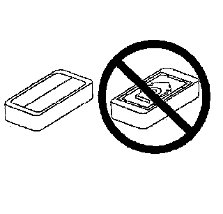
Place the inflator module on a work bench, with the vinyl trim cover facing up and away from the surface.
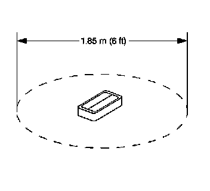
6. Clear a space on the ground about 1.85 m (6 ft) in diameter for deployment of the inflator module or deployment fixture. If possible, use a paved, outdoor location free of activity. Otherwise, use a space free of activity on the shop floor. Ensure you have sufficient ventilation.
7. Clear the area of loose or flammable objects.
8. IMPORTANT: Dual stage deployments are only used in steering wheel and I/P inflator modules. If stage 1 was used to deploy a dual stage inflator module, stage 2 may still be active. If disposal of a dual stage module is required, both deployment loops must be energized to deploy the air bag.
If you are deploying a steering wheel inflator module, place the inflator module in the center of the space.
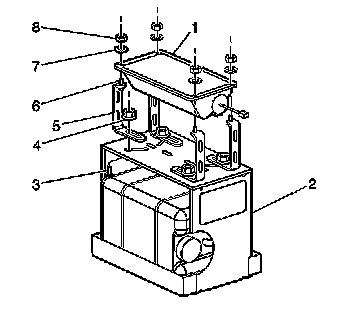
9. When deploying an I/P inflator module, perform the following instructions:
1. Place the J 39401-B in the center of the cleared area.
2. Fill the deployment fixture with water or sand.
3. Using the proper nuts and bolts, mount the I/P module (1) to the deployment fixture (2), with the vinyl trim facing up.
4. Securely tighten all fasteners that hold the I/P module (1) to the deployment fixture (2).
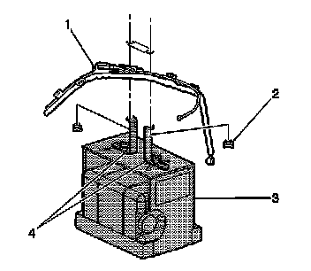
10. When deploying a roof rail module, perform the following instructions:
0. Place the J 39401-B (3) in the center of the cleared area.
1. Fill the deployment fixture with water or sand to provide sufficient stabilization of fixture during deployment.
2. Adjust and secure the fixture arms (4) to the deployment fixture (3), using the proper nuts and bolts.
3. Attach the roof rail module in the deployment fixture and securely tighten all fasteners.
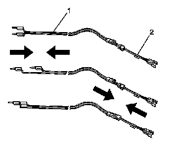
11. Inspect the SIR deployment harness and the appropriate pigtail adapter (2) for damage. Replace as needed.
12. Short the 2 SIR deployment harness leads (1) together using one banana plug seated into the other.
13. Connect the appropriate pigtail adapter (2) to the SIR deployment harness (1).
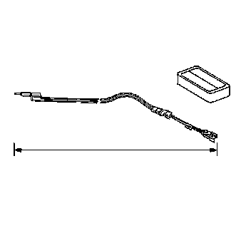
14. Extend the SIR deployment harness and adapter to the full length from the deployment fixture or area.
15. IMPORTANT: On a dual stage inflator module, both connectors must be attached to the deployment harness adapter. This will ensure that both stage 1 and stage 2 of the deployment loops are energized, regardless of the deployment state.
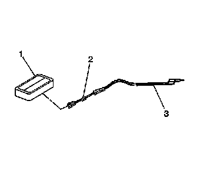
Connect the inflator module (1) to the adapter (2) on the SIR deployment harness (3).
16. IMPORTANT:
- The rapid expansion of gas involved with deploying an inflator module is very loud. Notify all the people in the immediate area that you intend to deploy the inflator module.
- When the inflator module deploys, the deployment fixture may jump about 30 cm (1 ft) vertically. This is a normal reaction of the inflator module due to the force of the rapid expansion of gas inside the inflator module.
- If you are deploying a dual stage inflator module with stage 1 already deployed, the fixture may not move and the noise may have been reduced.
Clear the area of people.
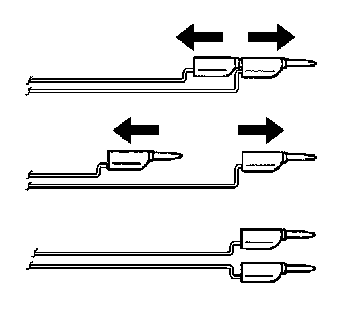
17. Separate the 2 banana plugs on the SIR deployment harness that were shorted together earlier in the procedure.
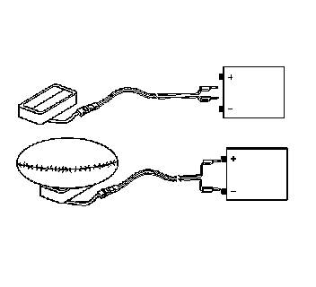
18. Place a 12-volt minimum/2-amp minimum power source, such as a vehicle battery, near the shorted end of the harness.
19. Connect the SIR deployment harness wires to the power source. Deployment of the inflator module will occur when contact is made.
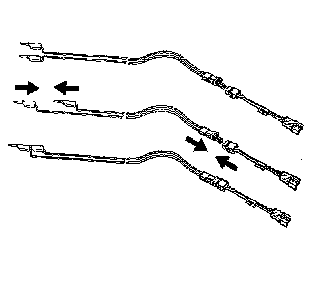
20. Disconnect the SIR deployment harness from the power source after the inflator module deploys.
21. If the inflator module did not deploy, disconnect the adapter and discontinue the procedure and contact the Technical Assistance Group.If deployment was successful, proceed to the following steps.
22. CAUTION: After deployment, the metal surfaces of the SIR component may be very hot. To help avoid a fire or personal injury:
- Allow sufficient time for cooling before touching any metal surface of the SIR component.
- Do not place the deployed SIR component near any flammable objects.
Seat one banana plug into the other in order to short the deployment harness leads.
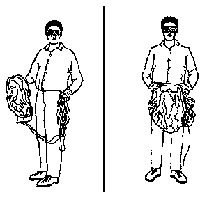
23. Put on a pair of shop gloves.
24. Disconnect the pigtail adapter from the inflator module as soon as possible.
25. Inspect the pigtail adapter and the SIR deployment harness. Replace as needed.
26. Dispose of the deployed inflator module through normal refuse channels.
27. Wash your hands with a mild soap.